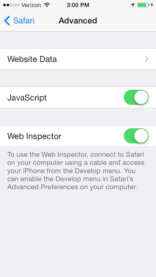
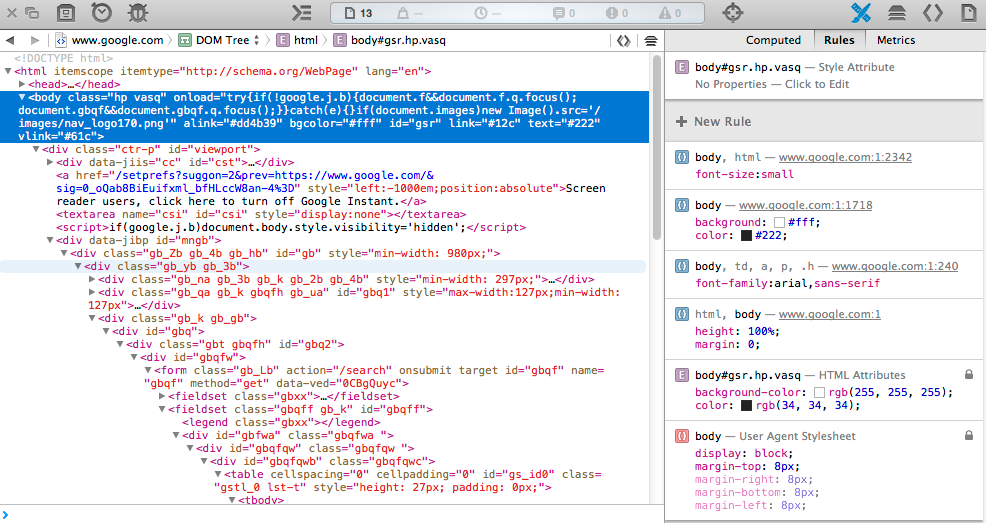
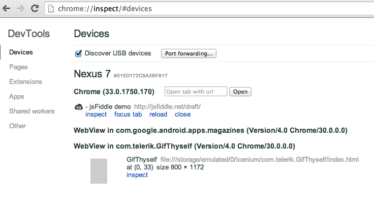
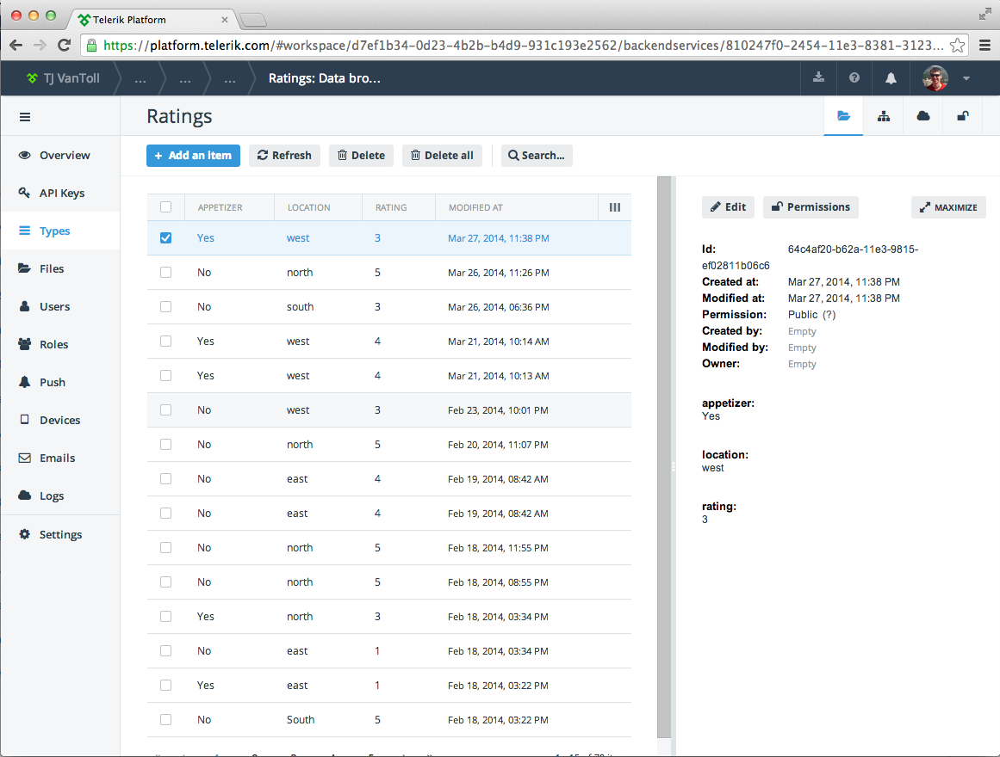
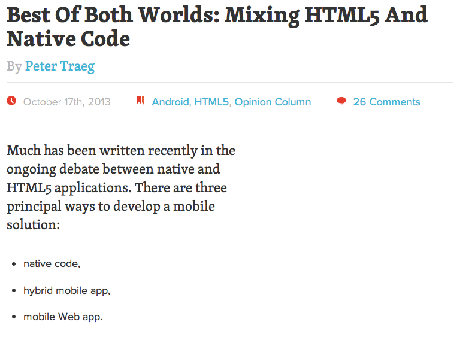

Web View Performance
- Hybrid performance is tied to the platform it runs on.
- Android 4.4 finally utilizes a Chromium-based web view.
- In iOS7 UIWebViews still have a 4x performance penalty (source).
Kendo UI Mobile

Now free and open source as part of Kendo UI Core.
Ionic

Remote Debugging
Weinre

http://people.apache.org/~pmuellr/weinre/docs/latest/Home.html
iOS Remote Debugging (iOS 6+)
Settings --> Safari --> Advanced
iOS Remote Debugging (iOS 6+)
Demo
Chrome for Android Remote Debugging (Android 4.4+)
"[T]ap Build number seven times. Yup, just tap it 7 times, even if it seems crazy."
Via https://developers.google.com/chrome-developer-tools/docs/remote-debugging
about:inspect
Chrome for Android Remote Debugging (Android 4.4+)

Demo
Cloud-Based Builds

LiveSync

Demo
Cordova Plugins

http://plugins.cordova.io/
Demo
Backend Services
Demo
Finding the Right BaaS
http://www.developereconomics.com/finding-right-baas/
"we’re tracking at least fifty BaaS offerings, and it seems more options appear nearly every month"
The future
Mix and match?
http://mobile.smashingmagazine.com/2013/10/17/best-of-both-worlds-mixing-html5-native-code/